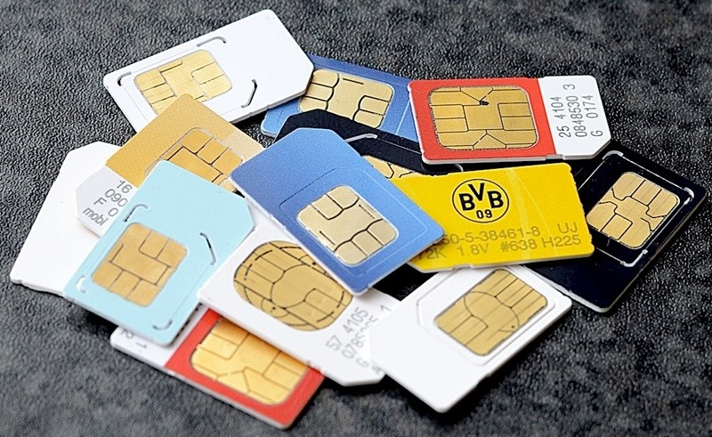

 OS rumores acerca de dispositivos mobile desprovidos de slots para chips já circulam na indústria de tecnologia há algum tempo, ganhando força de tempos em tempos, geralmente antes do lançamento de novos produtos da Apple. Agora, o assunto entra em destaque novamente em uma iniciativa da própria Empresa da Maçã junto da Samsung. Ao que parece a dupla está tentando emplacar o e-SIM, um novo modelo de cartão SIM embutido ao aparelho que permite a troca de operadora de forma rápida e sem qualquer burocracia.
Inicialmente, o plano das duas é convencer parceiras, concorrentes e outras gigantes do setor a investirem em uma peça integrada que é colocada no celular ou tablet durante sua fabricação, ficando inacessível ao usuário final. Esse “embedded SIM” (e-SIM) seria então programado para reconhecer as principais operadoras de telefonia do mercado, permitindo que o consumidor mude de plano e companhia conforme quiser, sem que tenha que ir a uma loja ou central para fazer a troca do item ou testar os serviços da empresa X ou Y.
Com nomes de peso fazendo lobby para o chip, é fácil imaginar que a tecnologia não deve demorar muito até ser aceita, com grandes chances de se popularizar em dispositivos Android e iOS no futuro breve. Para conseguir apoio à causa, Apple e Samsung estão em discussões avançadas com grandes marcas como AT&T, Deutsche Telekom (braço da norte-americana T-Mobile), Vodafone, Orange, Etisalat, Hutchison Whampoa e a Telefónica espanhola. Se elas adotarem o padrão o provável é que o resto do mercado siga esse mesmo caminho.
De acordo com o Financial Times, a perspectiva do grupo é bastante otimista para o recurso, com Anne Bouverot, CEO da GSMA, afirmando que todas as partes já estão bem encaminhadas para chegar em um acordo sobre o formato. Apesar disso, ainda precisaremos esperar um pouco para ver tudo isso em prática, já que o desenvolvimento da arquitetura que vai permitir que o e-SIM funcione adequadamente ainda deve levar um certo tempo, com a perspectiva de começar a chegar ao mercado em algum ponto de 2016.